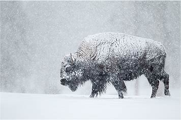
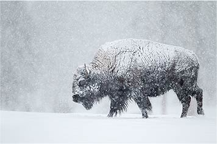

Powderhorn

OUR STORY
Founded in Jackson Hole, Wyoming, Powderhorn was largely inspired by the dramatic Teton mountain range. Widely known as one of the most rugged and authentic areas for skiers and mountaineers, the ski slopes of Jackson served as the perfect testing grounds for sturdy and reliable gear.
Powderhorn is inspired by the pure nature of Jackson Hole Wyoming. Our technical apparel is built with the mindset that using natural materials provides the best balance of functionality and longevity.


Teton 3 Season
WOMEN'S JACKET
If you need a jacket with almost every feature available along with being stylish, then grab the Powderhorn Teton 3 Season Jacket. This jacket comes fully equipped with an adjustable hood and waist, multiple exterior pockets and removable lightweight down vest.
 

Sustainable
ECO-CONSCIOUS
For our modern, high-end products, we use sustainable materials and production processes, a choice that embodies our contribution to the responsible use of natural resources. This decision sets us apart from our competitors and creates added value in terms of social responsibility.
Close to Nature
STEWARDSHIP
Our roots are in the pristine, natural world of Wyoming. For us, skiing is an emotional experience, in accord with an unspoiled landscape and its wild- life. We are proud of our roots and do our bit to ensure that this natural world remains intact for future generations.


Timeless
ENDURING
Our products are of the highest manu-facturing quality and well worth the price. Our design underscores our mindset: "being" is more important that "seeming". Our product portfolio is not influenced by short-lived fashion; it is timeless, self-assured and down to Earth.